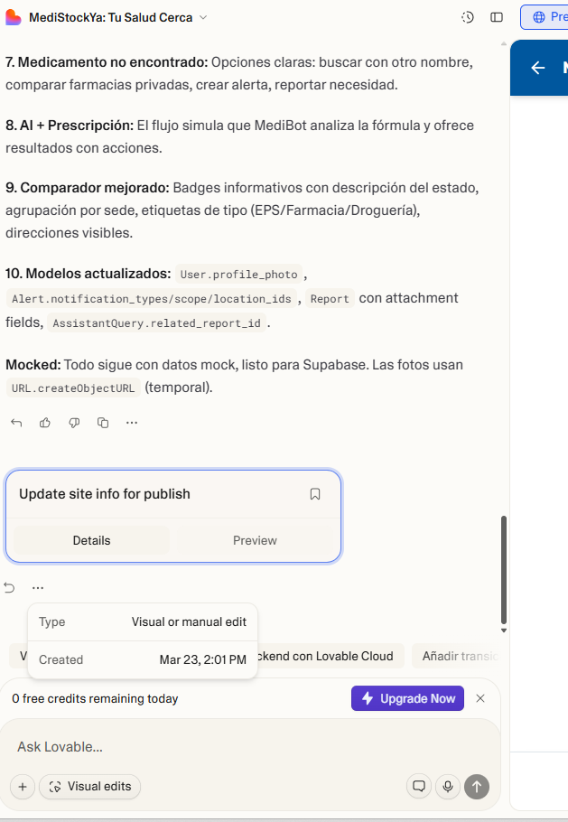
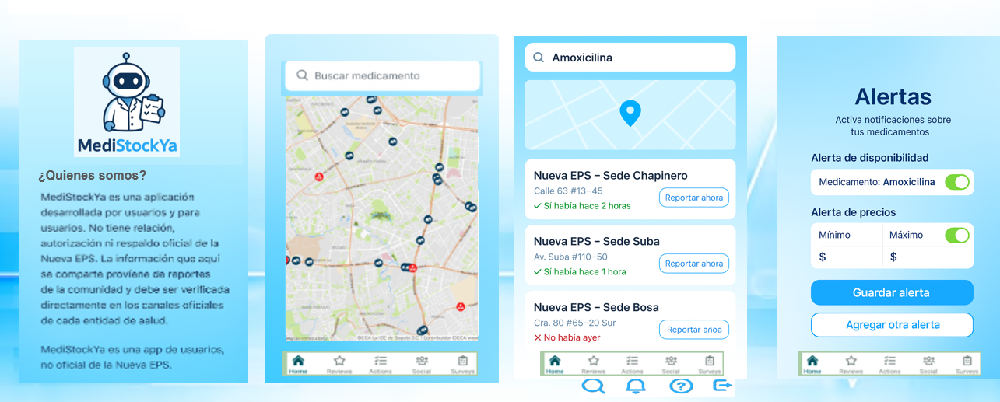
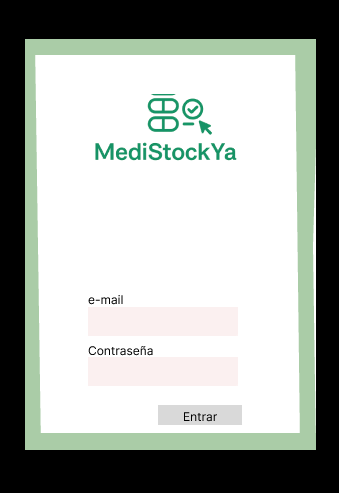
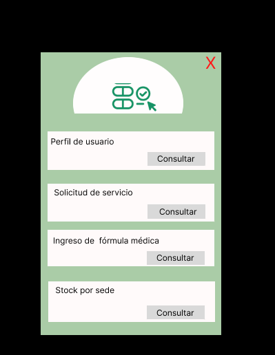
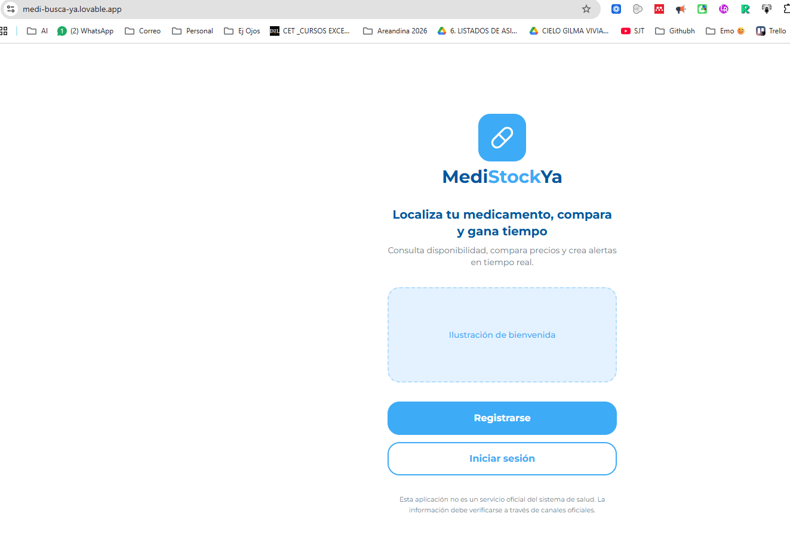

Lovable es una plataforma para crear aplicaciones web con lenguaje natural. Permite pasar de una idea o una referencia visual a una app funcional, revisarla y publicarla.
Lovable
Sirve para construir una app desde cero, rehacer una interfaz a partir de maquetas, organizar pantallas, preparar datos, revisar flujos y compartir una versión web en un enlace.
Se entra al proyecto, se redacta un prompt, se adjuntan imágenes o archivos si hacen falta, se genera la primera versión, se revisa el flujo, se corrige y después se publica.


En la interfaz puede aparecer un saldo inicial visible al comenzar. Después, el contador se ajusta al remanente diario del plan gratuito y al límite mensual del workspace.
Lo que consume créditos al construir es enviar mensajes o solicitudes nuevas al chat. Visual edits normalmente no consume créditos para ajustes visuales corrientes. Adjuntar material no gasta créditos hasta que se envía la instrucción.

Los planes pagos amplían créditos, opciones de equipo y controles de workspace. El comparativo oficial se revisa en la página de precios.
- +: agrega imágenes, archivos o referencias.
- Ask Lovable: envía una nueva instrucción.
- Visual edits: ajusta textos, colores, espacios e imágenes.
- Project settings, History y Knowledge: organizan configuración, cambios y contexto persistente.
- GitHub: saca el proyecto fuera de Lovable.
- Publish: publica la web app.

Ventajas
- Permite arrancar rápido desde texto e imágenes.
- Integra construcción, revisión y publicación.
- Visual edits ayuda a pulir sin rehacer todo.
- Puede conectarse con GitHub y backend.
Desventajas
- Hay que planear bien los créditos del workspace.
- La primera versión suele requerir corrección.
- Si no se especifica bien el prompt, inventa de más.
- La app publicada es web app, no app nativa por defecto.
Pasos previos
Antes de abrir Lovable conviene tener claro el objetivo de la app, las pantallas necesarias, la lógica general, el nombre del proyecto y qué funciones sí o sí deben quedar pedidas.
Si ya hay maqueta, se usan capturas claras como referencia principal de estructura y estilo. En este ejemplo se tomó la maqueta como punto de partida antes de reconstruir la app en Lovable.

Si el diseño ya existe en Adalo, la forma práctica de pasarlo es exportar pantallas, conservar colores, textos, botones y flujos, y usarlos como referencia visual dentro del prompt.


- Reunir maqueta, imágenes y textos base.
- Definir pantallas, funciones y datos.
- Escribir un prompt maestro.
- Generar la primera versión.
- Verificar flujo y corregir.
- Publicar la versión revisada.
Prompt
- Objetivo: qué app se va a construir.
- Usuarios: a quién va dirigida.
- Diseño: colores, tipografía, tono y estilo.
- Pantallas: cuáles deben existir.
- Funciones: qué debe hacer cada módulo.
- Datos: qué debe guardar.
- Restricciones: qué no debe cambiar o inventar.
- Entrega: qué debe devolver al final.
Cuando ya hay maqueta o imágenes, el prompt debe decir explícitamente que esas referencias son la base visual del proyecto. En el mismo texto pueden pedirse pantallas, base de datos, alertas, IA, perfil y demás funciones.
Las imágenes o archivos se agregan con Attach antes de enviar la instrucción.
El prompt se puede pulir antes de llevarlo a Lovable usando otra IA para resumir, ordenar o volver más precisa la instrucción. También puede usarse Lovable Prompt Creator para producir una base mejor estructurada.
En el prompt conviene fijar idioma, tono, accesibilidad, pantallas obligatorias, datos a guardar y límites claros. Las correcciones deben ir en rondas separadas para no rehacer toda la app.
La estrategia más segura es usar un prompt maestro para arrancar, una ronda de corrección funcional y después Visual edits para cambios visuales o menores.
Registro
Primero se crea la cuenta de acceso a Lovable. Desde ahí se habilita el workspace personal y luego ya se puede entrar al cuadro principal para empezar el proyecto.
El alta suele partir del correo o método de acceso seleccionado. Después se configura el workspace inicial y desde allí ya se ve el plan activo, los proyectos y el contador de créditos del workspace.
- Que el workspace se haya creado correctamente.
- Que el proyecto nuevo abra el cuadro de prompt.
- Que el contador de créditos sea visible.
- Que ya aparezca la opción de adjuntar material.
Verificación de flujo
Se verifica que la pantalla de bienvenida cargue, que los accesos principales sean visibles y que el enlace publicado sí muestre la app creada.

En este caso se revisan Disponibilidad, Comparador y Reporte como núcleo del flujo principal.


Se valida que alertas y perfil existan como pantallas independientes y que muestren la información esperada.


Se comprueba que el bloque del asistente esté visible dentro del inicio y que sus acciones rápidas tengan sentido con el flujo general.

- Confirmar si faltan sedes o si sobran pantallas.
- Revisar textos genéricos o saludos mal resueltos.
- Ver si alertas y perfil requieren más campos.
- Comprobar si todavía se ve demasiado web y poco móvil.
- Verificar qué placeholders de imagen o logo siguen pendientes.
Ediciones
Las revisiones del proyecto se hacen desde el propio editor. Ahí pueden verse respuestas del chat, cambios hechos por la herramienta y el acceso a Visual edits para ajustes rápidos.
- Visual edits para cambios visuales puntuales.
- History para revisar versiones.
- Knowledge para dejar contexto fijo del proyecto.
- Attach para sumar imágenes o archivos.
- Publish para volver a actualizar la versión pública.
Con 0 créditos ya no conviene enviar nuevos prompts. Aun así, se puede revisar el proyecto, abrir menús, usar Visual edits cuando aplique, mirar History, preparar Knowledge, conectar GitHub y publicar la versión actual.
Publicación
- Entrar al botón Publish.
- Definir la URL pública.
- Elegir el acceso (Public en este caso).
- Completar Website info si se desea.
- Revisar el resumen y confirmar.
- Abrir la app en vivo para comprobar el flujo.


Enlace publicado del ejemplo: